Exploring and Analysing patterns of a Heart Disease Dataset
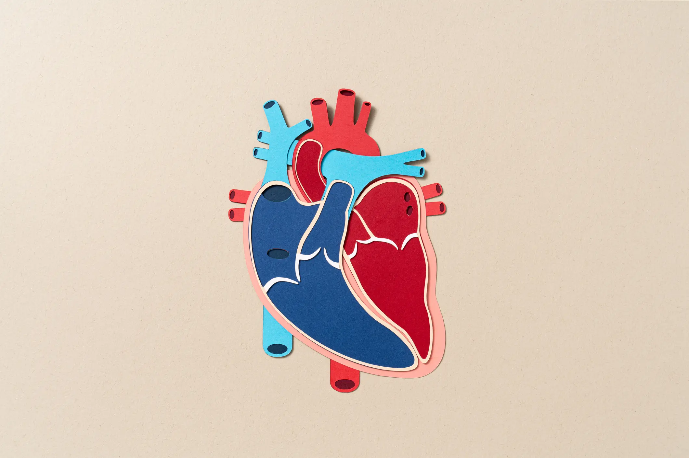
Dataset: heartdisease_tbl_ds
The dataset contains clinical and demographic data of patients, including quantitative variables such as age, blood pressure (BP), cholesterol, and maximum heart rate (MaximumHR), as well as qualitative variables such as sex, chest pain type, fasting blood sugar, exercise-induced angina, and heart disease diagnosis.
The aim of this exploratory data analysis (EDA) is to: Understand the distribution of key variables. Identify patterns, trends, and potential risk factors associated with heart disease. Highlight any surprising or counterintuitive findings.
Heart disease is influenced by a combination of demographic, clinical, and symptomatic factors. Among these, chest pain type and exercise-induced angina are key indicators that help clinicians assess the likelihood of underlying cardiac conditions. Chest pain is classified based on the number of classic angina features present:
Typical angina (3/3 features): Chest pain occurs predictably with exertion or emotional stress. Strongly indicative of myocardial ischemia and higher risk of heart disease.
Atypical angina (2/3 features): Pain may occur independently of exertion, vary with position, or be inconsistent. It is moderately predictive of heart disease.
Non-anginal pain (0–1/3 features): Pain is unrelated to cardiac stress and usually reflects non-cardiac causes.
Silent ischemia (asymptomatic): No chest pain is present, yet the patient may still have underlying heart disease, making it particularly dangerous due to the lack of warning symptoms.
Exercise-induced angina, or chest pain triggered specifically by physical activity, often overlaps with typical angina and serves as a strong predictor of heart disease. By analyzing how demographic factors (e.g., age, sex), clinical measures (e.g., blood pressure, cholesterol, maximum heart rate), and symptom presentation interact, we can identify high-risk individuals even before severe cardiac events occur.
In summary, understanding the relationship between symptom type, triggers, and underlying risk factors is critical for early detection, risk stratification, and effective prevention of heart disease.
2) Data Dictionary:
#Quantitative Data: Age(int): Age of the individual in years. BP(int): Resting blood pressure of the individual, measured in mm Hg. Cholesterol(int): Serum cholesterol level measured in mg/dL. MaximumHR(int): Maximum heart rate achieved during exercise, measured in beats per minute (BPM).
#Qualitative Data: Sex(fct): Biological sex of the individual (Male / Female). ChestPain(fct): Type of chest pain experienced (Typical angina, Atypical angina, Non-anginal pain, Asymptomatic). BloodSugar(fct): Indicates whether fasting blood sugar is greater than 120 mg/dL (TRUE = Yes, FALSE = No). ExerciseInducedAngina(fct): Presence of exercise-induced angina (Yes / No). HeartDisease(fct): Presence or absence of diagnosed heart disease (Yes / No).
3) Setting up R Packages:
library(tidyverse)
── Attaching core tidyverse packages ──────────────────────── tidyverse 2.0.0 ──
✔ dplyr 1.1.4 ✔ readr 2.1.5
✔ forcats 1.0.0 ✔ stringr 1.5.1
✔ ggplot2 4.0.0 ✔ tibble 3.3.0
✔ lubridate 1.9.4 ✔ tidyr 1.3.1
✔ purrr 1.1.0
── Conflicts ────────────────────────────────────────── tidyverse_conflicts() ──
✖ dplyr::filter() masks stats::filter()
✖ dplyr::lag() masks stats::lag()
ℹ Use the conflicted package (<http://conflicted.r-lib.org/>) to force all conflicts to become errors
library(mosaic)
Registered S3 method overwritten by 'mosaic':
method from
fortify.SpatialPolygonsDataFrame ggplot2
The 'mosaic' package masks several functions from core packages in order to add
additional features. The original behavior of these functions should not be affected by this.
Attaching package: 'mosaic'
The following object is masked from 'package:Matrix':
mean
The following objects are masked from 'package:dplyr':
count, do, tally
The following object is masked from 'package:purrr':
cross
The following object is masked from 'package:ggplot2':
stat
The following objects are masked from 'package:stats':
binom.test, cor, cor.test, cov, fivenum, IQR, median, prop.test,
quantile, sd, t.test, var
The following objects are masked from 'package:base':
max, mean, min, prod, range, sample, sum
library(skimr)
Attaching package: 'skimr'
The following object is masked from 'package:mosaic':
n_missing
library(visdat)library(naniar)
Attaching package: 'naniar'
The following object is masked from 'package:skimr':
n_complete
library(janitor)
Attaching package: 'janitor'
The following objects are masked from 'package:stats':
chisq.test, fisher.test
library(tinytable)
Attaching package: 'tinytable'
The following object is masked from 'package:ggplot2':
theme_void
library(ggformula)library(DT)library(crosstable)
Attaching package: 'crosstable'
The following object is masked from 'package:purrr':
compact
# 1) Sex vs Heart Diseaseggplot(HeartDiseaseDS_modified, aes(x = sex, fill = heart_disease)) +geom_bar(position ="fill") +labs(title ="Proportion of Heart Disease by Sex", y ="Proportion") +scale_fill_brewer(palette ="Paired")
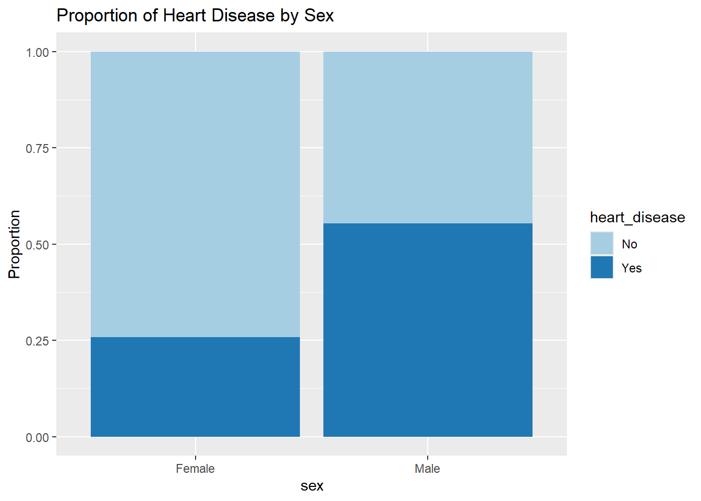
Purpose: To examine if heart disease prevalence differs between males and females.
Inference: Males have a higher proportion of heart disease than females.
Surprising aspect: Even though males show more heart disease, a notable portion of females still have it, indicating risk is present across sexes.
2. Age Distribution by Heart Disease
# 2) Age Distribution vs Heart Diseaseggplot(HeartDiseaseDS_modified, aes(x = age, fill = heart_disease)) +geom_density(alpha =0.6) +labs(title ="Heart Disease Density by Age",subtitle ="How Does Age Distribution Differ Between People With and Without Heart Disease?",x ="Age",y ="Density",fill ="Heart Disease" ) +scale_fill_brewer(palette ="Set1")
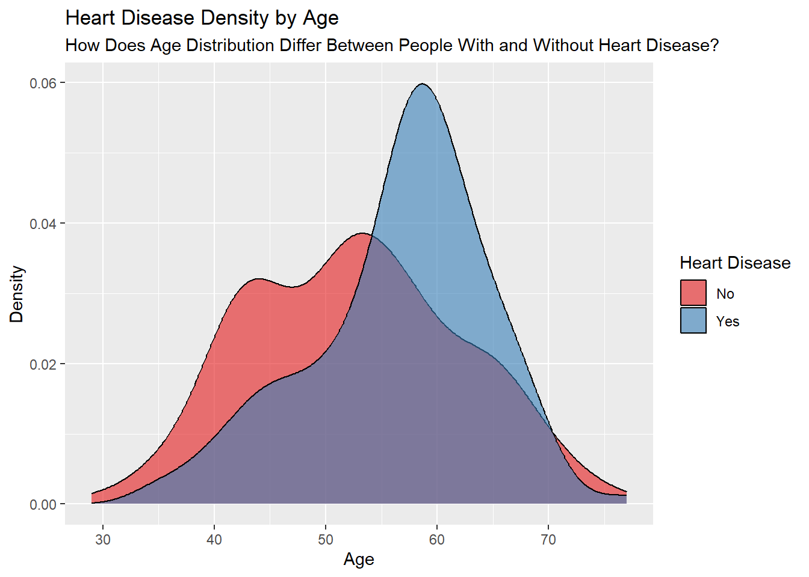
Purpose: To see if age influences heart disease.
Inference: Older individuals especially in the range of 55-65 years tend to have higher incidence of heart disease.
Surprising: Some younger individuals (<40 years) also show heart disease, suggesting non-age-related risk factors.
3. Exercise-Induced Angina vs Heart Disease
#3 Exercise-Induced Angina vs Heart Diseaseggplot(HeartDiseaseDS_modified, aes(x = exercise_induced_angina, fill = heart_disease)) +geom_bar(position ="fill") +labs(title ="Heart Disease by Exercise-Induced Angina", y ="Proportion") +scale_fill_brewer(palette ="Blues")
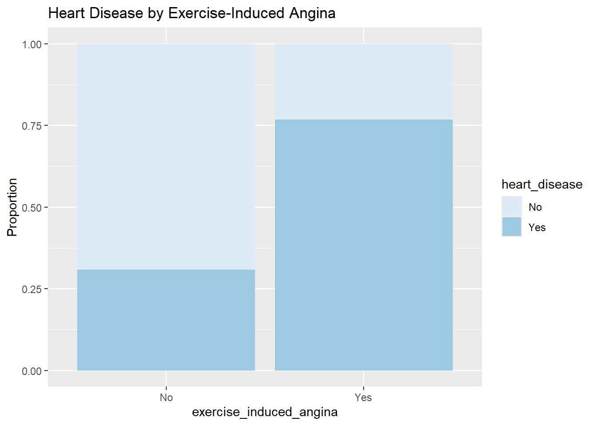
Purpose: To determine if angina during exercise is a strong predictor of heart disease.
Inference: People with exercise-induced angina have a much higher likelihood of heart disease.
Surprising: A few patients without angina still have heart disease, emphasizing the need for comprehensive risk assessment.
4. Age Distribution by Chest Pain Type:
#4 Age Distribution by Chest Pain Type:ggplot(HeartDiseaseDS_modified, aes(x = age, fill = chest_pain)) +geom_density(alpha =0.6) +labs(title ="Does Chest Pain Type Vary With Age?",x ="Age (Years)",y ="Density",fill ="Chest Pain Type" ) +scale_fill_brewer(palette ="Set1")
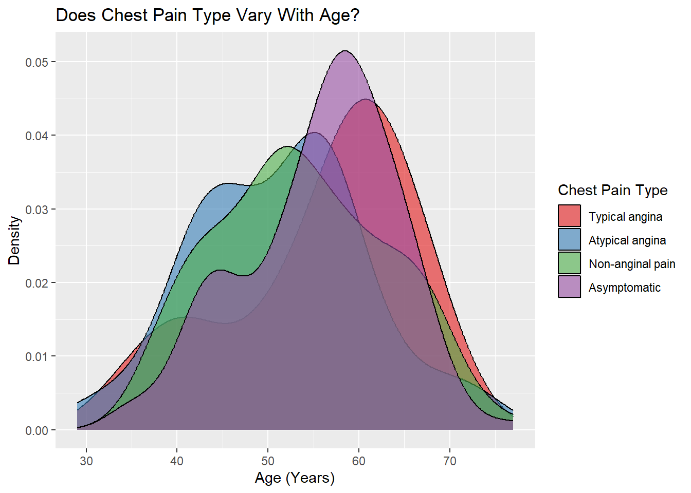
Purpose: To analyze if different types of chest pain are associated with certain age groups.
Inference: Typical angina tends to appear in middle-aged and older adults.
Surprising: Atypical chest pain appears across all ages, showing symptom variation independent of age.
5. Age vs Blood Pressure by Chest Pain Type
#5 Age vs Blood Pressure by Chest Pain Typegf_point(bp ~ age, color =~chest_pain, data = HeartDiseaseDS_modified, alpha =0.6) %>%gf_lm(color =~chest_pain) %>%gf_labs(title ="Age vs Blood Pressure by Chest Pain Type",x ="Age (years)",y ="Resting BP (mm Hg)",color ="Chest Pain Type" )
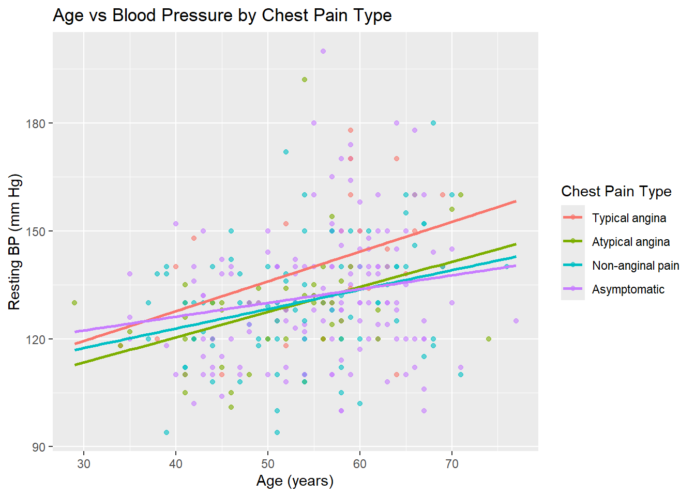
Purpose: To observe blood pressure trends with age across different chest pain types.
Inference: Blood pressure generally increases with age.
Surprising: Some young individuals with atypical or asymptomatic chest pain already have high blood pressure, highlighting early risk markers.
6. Chest Pain vs Exercise-Induced Angina & Heart Disease:
#6 Chest Pain vs Exercise-Induced Anginaggplot(HeartDiseaseDS_modified, aes(x = chest_pain, fill = exercise_induced_angina)) +geom_bar(position ="fill") +labs(title ="Exercise-Induced Angina by Chest Pain Type", y ="Proportion") +scale_fill_brewer(palette ="Blues")
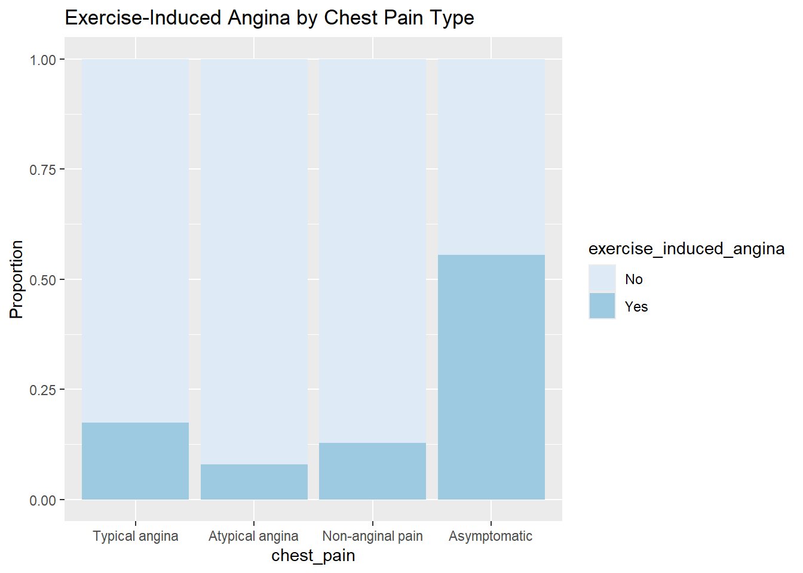
# Chest Pain vs Heart Diseaseggplot(HeartDiseaseDS_modified, aes(x = chest_pain, fill = heart_disease)) +geom_bar(position ="fill") +labs(title ="Heart Disease by Chest Pain Type", y ="Proportion") +scale_fill_brewer(palette ="Blues")
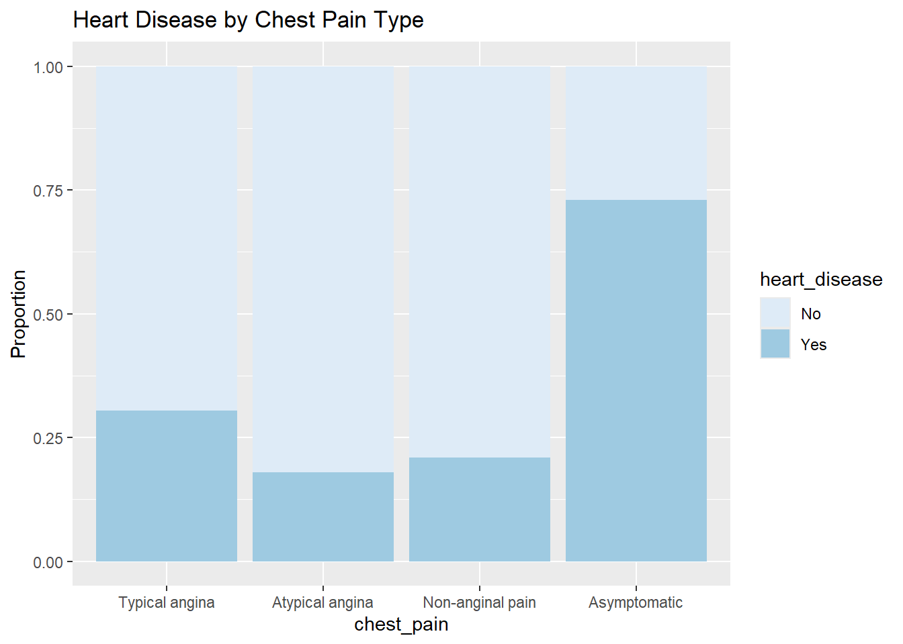
Purpose: To see how chest pain type relates to both angina and heart disease.
Inference: Although Typical angina is associated with both exercise-induced angina and heart disease, comparitvely asymptomatic is more and the charts are pretty similiar for both exercise-induced angina as well as heart hence showing their close relation.
Surprising: A lot of asymptomatic people have heart disease comparatively which is suprising and scary.
7. Sex & Exercise-Induced Angina vs Heart Disease
#7 Sex + Exercise-Induced Angina vs Heart Diseaseggplot(HeartDiseaseDS_modified, aes(x =interaction(sex, exercise_induced_angina), fill = heart_disease)) +geom_bar(position ="fill") +labs(title ="Heart Disease by Sex and Exercise-Induced Angina", x ="Sex + Angina", y ="Proportion") +scale_fill_brewer(palette ="Blues")
Purpose: To check combined effects of sex and angina on heart disease risk.
Inference: Males with angina have the highest heart disease proportion.
Surprising: Females with angina also have a notable heart disease proportion, suggesting risk factors aren’t limited to men.
8. Sex, Chest Pain & Exercise-Induced Angina vs Heart Disease
#8 Sex + Chest Pain + Exercise-Induced Anginaggplot(HeartDiseaseDS_modified, aes(x =interaction(sex, chest_pain, exercise_induced_angina), fill = heart_disease)) +geom_bar(position ="fill") +labs(title ="Heart Disease by Sex, Chest Pain, and Exercise-Induced Angina", x ="Sex + Chest Pain + Angina", y ="Proportion") +theme(axis.text.x =element_text(angle =60, hjust =1)) +scale_fill_brewer(palette ="Blues")
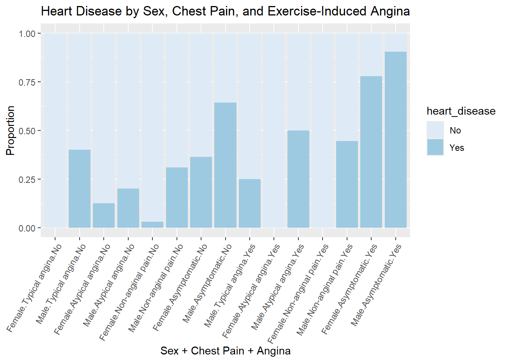
Purpose: Multi-variable interaction to identify highest risk subgroups.
Inference: Asymptmatic male patients with or without exercise-induced angina are at highest risk, which shows that maybe it doesnt depend on factors and shows how it can easily go undiagnosed without any eraly signs.
9. Chest Pain Type vs Heart Disease by Sex
#9ggplot(HeartDiseaseDS_modified, aes(x = chest_pain, fill = heart_disease)) +geom_bar(position ="fill") +facet_wrap(~sex) +labs(title ="Chest Pain Type vs Heart Disease by Sex", x ="Chest Pain Type", y ="Proportion") +scale_fill_brewer(palette ="Blues") +theme(axis.text.x =element_text(angle =30, hjust =1))
Purpose: To compare heart disease prevalence across chest pain types for each sex.
Inference: The male-female difference is more pronounced in typical angina.
Surprising: Female and male patients with asymptomatic chest pain still show highest heart disease proportion.
10. Exercise-Induced Angina vs Heart Disease by Sex
#10ggplot(HeartDiseaseDS_modified, aes(x = exercise_induced_angina, fill = heart_disease)) +geom_bar(position ="dodge") +facet_wrap(~sex) +labs(title ="Exercise-Induced Angina vs Heart Disease by Sex", x ="Exercise-Induced Angina", y ="Count") +scale_fill_brewer(palette ="Blues")
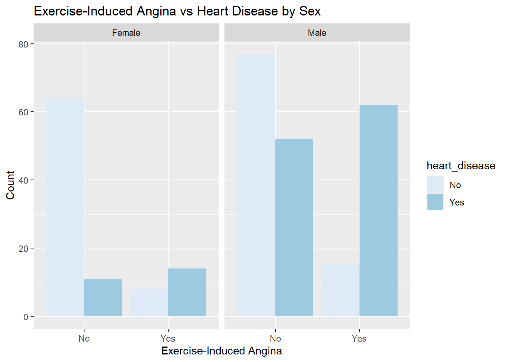
Purpose: To visualize absolute counts instead of proportions.
Inference: Heart disease is more prominent in males compared to females. Additionally, males tend to have have heart disease either with or without exercise-induced angina.
11. Heart Disease Prevalence Across Age Groups by Sex
#11HeartDiseaseDS_modified <- HeartDiseaseDS_modified %>%mutate(AgeGroup =cut(age, breaks =seq(20, 80, 10), right =FALSE))ggplot(HeartDiseaseDS_modified, aes(x = AgeGroup, fill = heart_disease)) +geom_bar(position ="dodge") +facet_wrap(~sex) +labs(title ="Heart Disease Prevalence Across Age Groups by Sex", x ="Age Group", y ="Count")
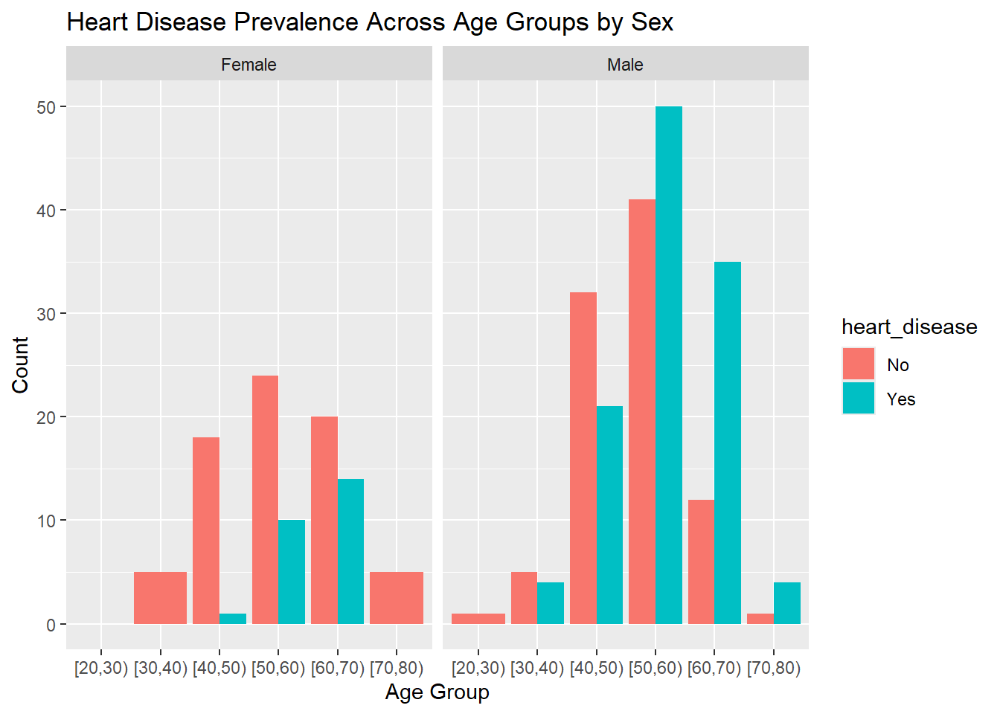
Purpose: To identify age ranges with highest heart disease prevalence by sex.
Inference: Older males (50–60+) have the highest prevalence.
Surprising: Some younger males (<40) also have heart disease.
12. Combined Risk Factors by Sex:
#12ggplot(HeartDiseaseDS_modified, aes(x = cholesterol, y = bp, size = maximum_hr, color = heart_disease)) +geom_point(alpha =0.6) +facet_wrap(~sex) +labs(title ="Combined Risk Factors by Sex", x ="Cholesterol (mg/dL)", y ="Blood Pressure (mm Hg)")
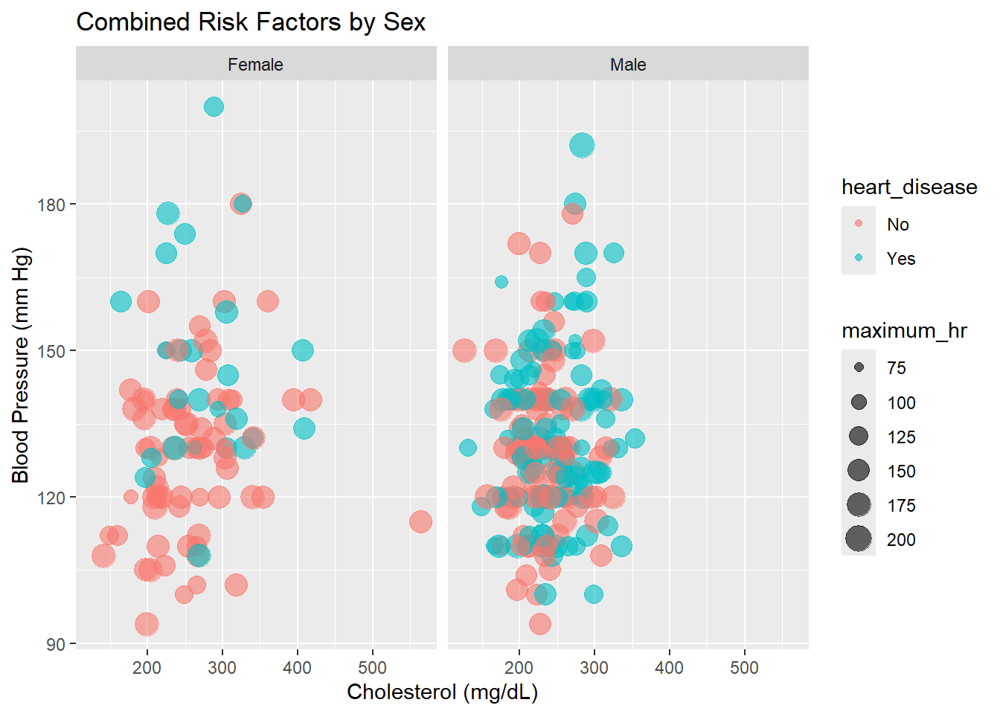
Purpose: To see clusters of high-risk patients across multiple risk factors.
Inference: Patients with heart disease cluster at higher BP and cholesterol values.
13. Heart Rate vs Cholesterol & Age Analysis
#13.1 Maximum Heart Rate vs Cholesterol by Sexgf_point(maximum_hr ~ cholesterol, color =~sex, data = HeartDiseaseDS_modified, alpha =0.6) %>%gf_lm(color =~sex) %>%gf_labs(title ="Maximum Heart Rate vs Cholesterol by Sex",x ="Cholesterol (mg/dL)",y ="Maximum Heart Rate (BPM)",color ="Sex" )
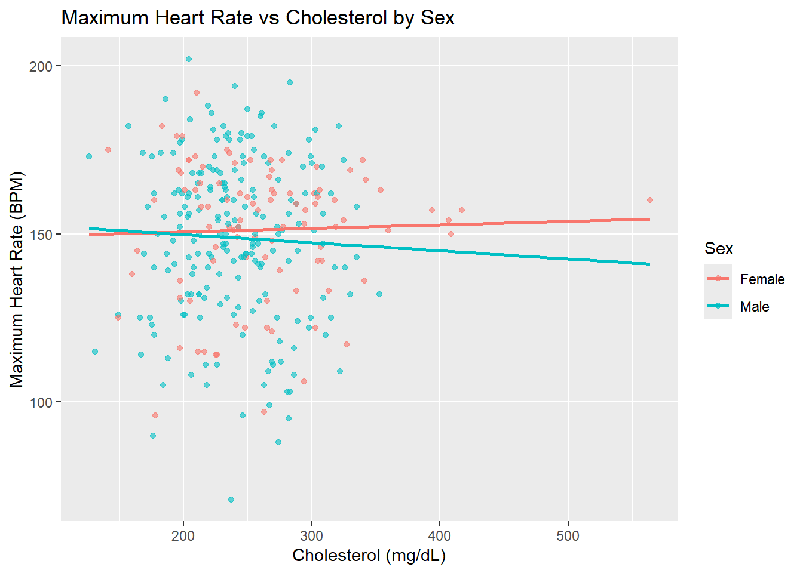
#13.2 Cholesterol vs MaximumHR — by Sex and Heart Diseaseggplot(HeartDiseaseDS_modified, aes(x = cholesterol, y = maximum_hr, color = heart_disease, shape = sex)) +geom_point(alpha =0.7, size =2.5) +labs(title ="Cholesterol vs Maximum HR by Sex and Heart Disease",x ="Cholesterol (mg/dL)", y ="Maximum Heart Rate (BPM)", color ="Heart Disease", shape ="Sex") +scale_color_brewer(palette ="Dark2")
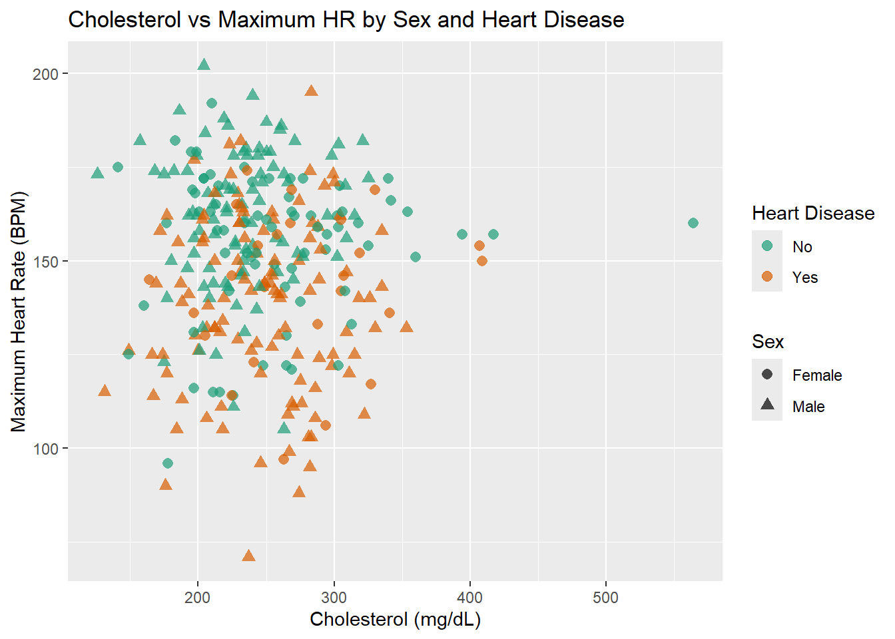
#13.3 Age vs MaximumHR — faceted by Exercise-Induced Anginaggplot(HeartDiseaseDS_modified, aes(x = age, y = maximum_hr, color = heart_disease)) +geom_point(alpha =0.7, size =2.5) +facet_wrap(~exercise_induced_angina) +labs(title ="Age vs Maximum Heart Rate by Exercise-Induced Angina",x ="Age (years)", y ="Maximum HR (BPM)", color ="Heart Disease")
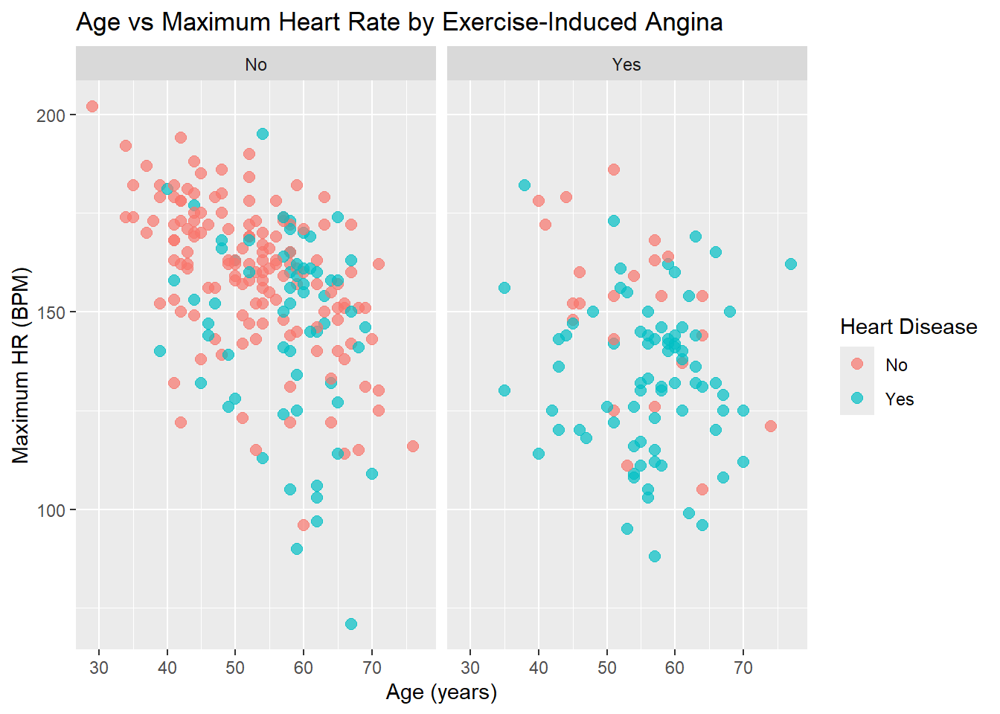
Inference: Maximum HR decreases with age. Cholesterol has little linear relationship with max HR. Male patients consistently have higher HR/cholesterol combinations than females. Patients with exercisd-induced angina are more prone to heart disease.
Surprising: Some older patients maintain high maximum HR despite high age.
14. Correlation Plots (GGally):
library(GGally)#14.1 BASIC NUMERIC CORRELATIONSGGally::ggpairs( HeartDiseaseDS_modified %>%drop_na(),columns =c("age", "bp", "cholesterol", "maximum_hr"),switch ="both",diag =list(continuous ="barDiag"),lower =list(continuous =wrap("smooth", alpha =0.3, se =FALSE)),title ="Correlation Among Key Heart Health Indicators")
`stat_bin()` using `bins = 30`. Pick better value `binwidth`.
`stat_bin()` using `bins = 30`. Pick better value `binwidth`.
`stat_bin()` using `bins = 30`. Pick better value `binwidth`.
`stat_bin()` using `bins = 30`. Pick better value `binwidth`.
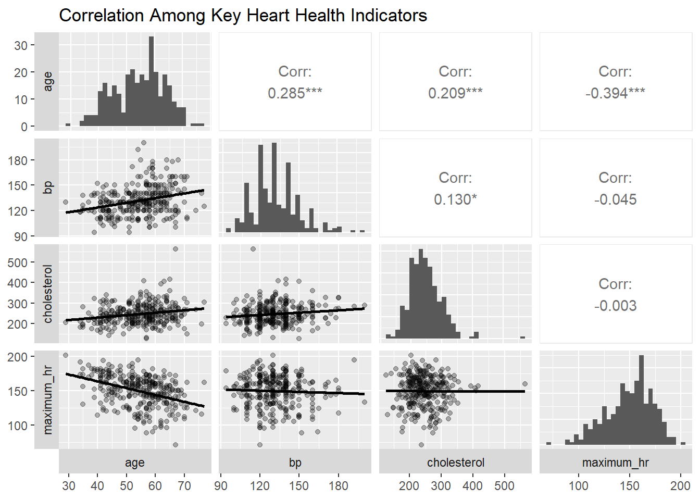
#14.2 NUMERIC CORRELATION BY SEXGGally::ggpairs( HeartDiseaseDS_modified %>%drop_na(),columns =c("age", "bp", "cholesterol", "maximum_hr"),aes(color = sex, alpha =0.7),diag =list(continuous ="barDiag"),lower =list(continuous =wrap("smooth", alpha =0.4, se =FALSE)),title ="Heart Health Metrics Correlations Colored by Sex")
`stat_bin()` using `bins = 30`. Pick better value `binwidth`.
`stat_bin()` using `bins = 30`. Pick better value `binwidth`.
`stat_bin()` using `bins = 30`. Pick better value `binwidth`.
`stat_bin()` using `bins = 30`. Pick better value `binwidth`.
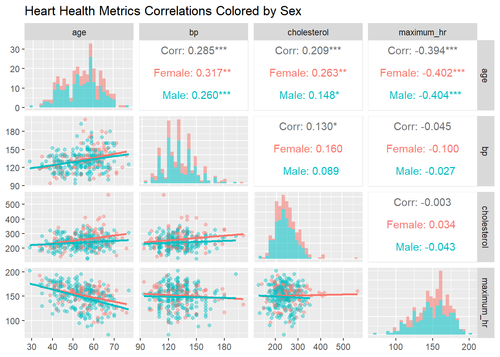
#14.3 NUMERIC CORRELATION BY HEART DISEASEGGally::ggpairs( HeartDiseaseDS_modified %>%drop_na(),columns =c("age", "bp", "cholesterol", "maximum_hr"),aes(color = heart_disease, alpha =0.7),diag =list(continuous ="barDiag"),lower =list(continuous =wrap("smooth", alpha =0.4, se =FALSE)),title ="Correlation Between Health Metrics by Heart Disease Status")
`stat_bin()` using `bins = 30`. Pick better value `binwidth`.
`stat_bin()` using `bins = 30`. Pick better value `binwidth`.
`stat_bin()` using `bins = 30`. Pick better value `binwidth`.
`stat_bin()` using `bins = 30`. Pick better value `binwidth`.
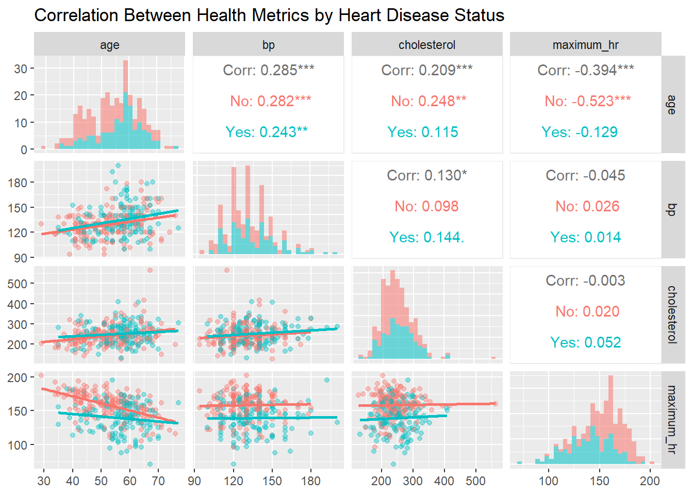
Inference: Age is the strongest predictor among these metrics: positively associated with BP and cholesterol, negatively with max HR. Maximum HR is inversely related to age, which is clinically expected (cardiac capacity declines with age). BP and cholesterol are weakly correlated, meaning they may independently contribute to risk. Cholesterol has little correlation with max HR, suggesting it’s a separate risk factor.
Surprising Aspect: Maximum HR shows the strongest linear relationship with age among these variables, while cholesterol, often thought of as a major heart risk factor, is weakly correlated with both BP and max HR in this cohort.
Inference: Age and blood pressure are positively associated with heart disease. Maximum heart rate is negatively associated. Cholesterol shows little to no clear correlation in this dataset.
13) Final Inferences:
Sex and Heart Disease:
Males have a higher prevalence of heart disease than females. Females, however, still show notable cases, indicating heart disease risk is present across sexes.
Age Factor:
Older adults (particularly 50–65 years) have higher heart disease prevalence. Some younger individuals (<40 years) also exhibit heart disease, suggesting non-age-related risk factors.
Exercise-Induced Angina:
Strong predictor of heart disease; patients with angina are more likely to have heart disease. A few patients without angina still have heart disease, highlighting the need for comprehensive risk assessment.
Chest Pain Type:
Typical angina correlates with middle-aged/older patients and higher disease risk. Asymptomatic individuals can still have heart disease, demonstrating that absence of symptoms does not equal absence of risk.
Combined Risk Factors:
Blood pressure and age positively correlate with heart disease. Maximum heart rate is negatively associated with disease, reflecting declining cardiac capacity with age or disease. Cholesterol shows weak correlation with other numeric risk factors, suggesting it may independently contribute to risk.
Multivariate Interactions:
Males with angina or typical/asymptomatic chest pain are highest-risk subgroups. Some younger patients with high BP or cholesterol also show heart disease, emphasizing early detection importance.
Correlation Insights:
Maximum HR decreases with age, a clinically expected pattern. Age shows the strongest correlation with heart disease among numeric factors. Blood pressure is a strong positive predictor, while cholesterol shows little correlation with maximum HR or BP in this cohort.
Surprising Observations:
A notable proportion of asymptomatic patients have heart disease, highlighting the silent nature of the disease. Cholesterol, often considered a major risk factor, shows weak correlation with other heart metrics. Some older patients maintain high maximum HR despite advanced age.
14) Overall Conclusion:
The exploratory data analysis demonstrates that age, sex, blood pressure, and exercise-induced angina are key determinants of heart disease in this dataset. While traditional risk factors like cholesterol are important, symptom absence (asymptomatic chest pain) and younger age do not guarantee low risk. This highlights the need for holistic, multi-factor assessment in clinical screening for heart disease.
The dataset provides a clear basis for risk stratification, early detection, and targeted intervention, with visualizations helping identify high-risk subgroups and interactions between clinical factors in terms of heart disease.